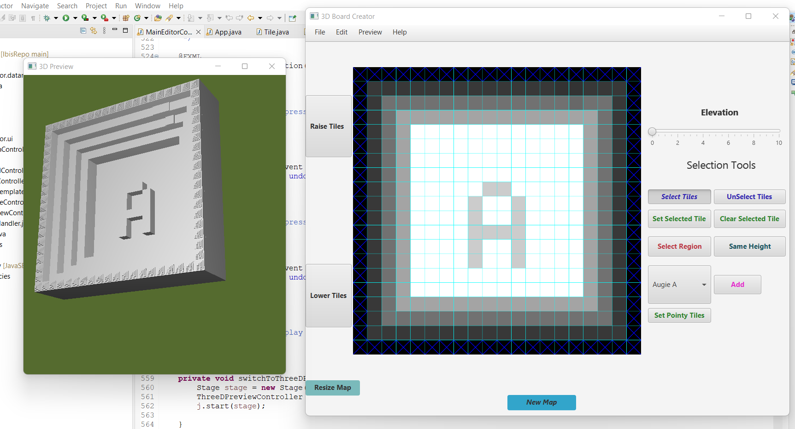

My Projects
- All
- Python
- Java
- Database
- Research
Memory Puzzle Game (Python)

I created a memory puzzle game using the python language. It is user-friendly and any person with little to no experience can play this game. It makes use of algorithms that tracks where card with a specific label, color, and shape is. It randomly chooses different cards and draws it on the grid. Then it asks the user the color and shape of the label after displaying it for few seconds. Then it compares the attributes of the card and calls different functions. It has different levels with different difficulties. The goal is to help people focus and tests your memory and brain power. I provided a documentation that includes a description of how to play the game, any challenges users might face and any limitations to this game.
Here is a link to the files of the memory puzzle game:
https://github.com/elnatan3/Memory-Puzzle-Game
Ethiopian Recipe App (Java)

I created an Ethiopia Recipe App that allows users from around the world to learn about Ethiopian dishes. The inspiration behind developing this app was becasue I wanted to spread the word of the food I use to eat back home on the daily basis. The different kind of food is so delicious and I want people to not only now the name of these dishes but also how they are made because most of these foods are made using ingridients that people use in the western world. The app is secure as it asks for login credentials that I have provided in the Read Me on my github respository. Also it allows users to add, edit, and delete recipes. Also, I provided additional advanced features on my app such as the ability to add resumes to your favorite list, the ability to search for recipes, and more. I designed the app as the basis for the platform for Ethiopian all around the world to contribute to it and share the delicious foods of Ethiopia.
Here is a link to the files of the Ethiopian Recipe app:
https://github.com/elnatan3/Ethiopian_Recipe_App
Student Database (Microsoft Access and relational database)

I created a student database that makes use of tables, queries, forms, and reports. It is an automated system that allows teachers to login with their details, and access student information. It uses relational database to make changes to different forms at once. By entering student grades, the system automatically calculates different details of grades and displays the total, average, minimum, maximum scores. It also allows teachers to easily find and search students just by typing specific details. It also generates the final reports from different forms. Finally, it allows teachers to take attendance efficiently and easily track the overall attendance report of students.
Here is a link to the zip folder of the Student Database
https://github.com/elnatan3/Memory-Puzzle-Game
3D Board Creator (Java and Software Development)
In my CSC 305 Software Development course, I developed a Three Game Board using Java FX. I used external or third party code libraries for creating the stage and scene for the project. I used event-based programming and GUI design, exception handling, and threading. The projects makes use of applying encapsulation, polymorphism, & inheritance concepts. I implemented use of agile methodologies for doing the project with my team and springs and milestones for divided the tasks between each other. We used github for team collaboration.
Here is a link to our project
https://github.com/AugustanaCSC305Fall22/IbisRepo
Undependant Rock Island Research Project (Python, Google Earth, Microsoft Excel)

I worked on a python research project with a faculty member. This project started in 2016, was updated in 2019 but was not continued and had few bugs. I joined the team in 2022. The purpose of this project was to find out people's preference in walking or biking in the Rock Island area, how physically active people were, and to encourage people to walk/bike. The python file outputs all the details regarding which areas people enjoyed walking/biking frequently vs areas people avoid based on the different calculations such as the mode and other criterias. Such criterias include the specific reasons people do certain things. For example, people walking/biking to get things done/going for a walk/would consider walking/biking in the area. Within each criteria we would also consider walking only in the side walks and walking in streets and side walks. We would map the route on google earth during the hand conversations and the python file uses an algorithym to generate the street blocks and colors for the routes based on the rating for that specific block. The python would also generate a conversations folder and compilations folder to distinguish the different criterias.
Here is a link to our project
https://github.com/undependent-Rock-Island/conversation-routes